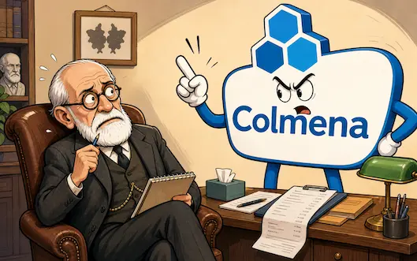
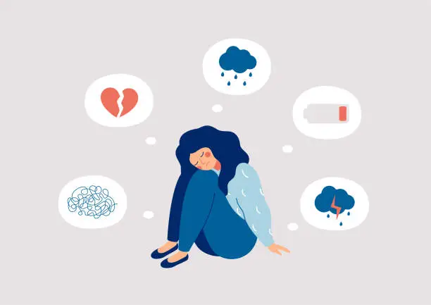
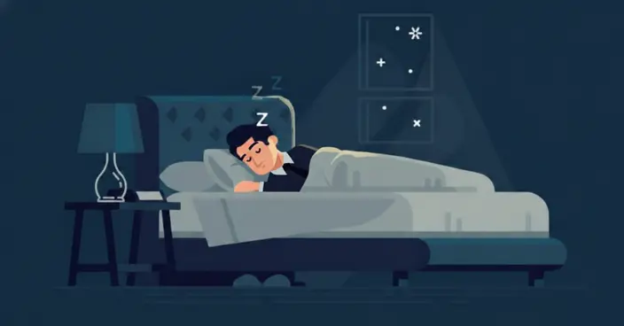
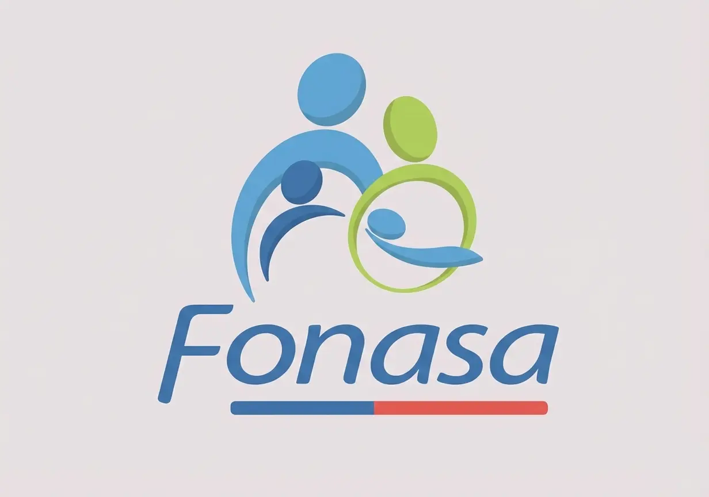

Reflexiones para tu bienestar.
Recursos y reflexiones de nuestros terapeutas para tu salud mental.
Artículos del blog

Reembolso Colmena para psicólogo: guía práctica
Cómo usar boleta, orden médica, libre elección y seguro complementario para que tu terapia sea más simple.
Leer más
Psicología por ISAPRE: cobertura y reembolso
Cómo usar tu cobertura, pedir reembolso con boleta y agendar psicólogo en Providencia u online.
Leer más
Delirios y obsesiones
Una mirada clínica para distinguir entre delirios y pensamientos obsesivos.
Leer más
Psicoterapia: el orden del caos
Cómo la terapia enciende la luz en los momentos de mayor desorden vital.
Leer más
Ansiedad: escucha a tu cuerpo
Lo que tu cuerpo muestra cuando la mente calla. Señales físicas de la ansiedad.
Leer más
Crónica de una primera sesión
El lenguaje del cuidado y la protección en el espacio terapéutico inicial.
Leer más
Higiene del sueño
Consejos prácticos y efectivos para recuperar un descanso reparador.
Leer másGestión de ansiedad: técnica 4-7-8
Domina tu respiración para calmar el sistema nervioso en minutos.
Leer más
Psicólogo por FONASA: valor y cómo agendar
Conoce el copago, horarios, modalidades de atención y reembolsos complementarios.
Leer másCómo comprar bono FONASA para psicólogo por internet
Aprende el paso a paso en Mi FONASA, qué código usar, cómo revisar el valor y cuándo pedir ayuda antes de agendar.
Leer másDepresión: qué es y cuándo pedir ayuda
Más que tristeza: reconoce los síntomas, tipos y tratamientos de la depresión con rigor clínico.
Leer másDuelo: transitar la pérdida sin perder el rumbo
Etapas, duelo complicado y cómo la terapia acompaña el proceso de perder a alguien.
Leer másCómo superar una ruptura de pareja
La neurociencia del dolor amoroso, los errores que lo prolongan y los pasos concretos para sanar.
Leer más